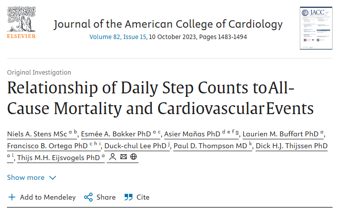
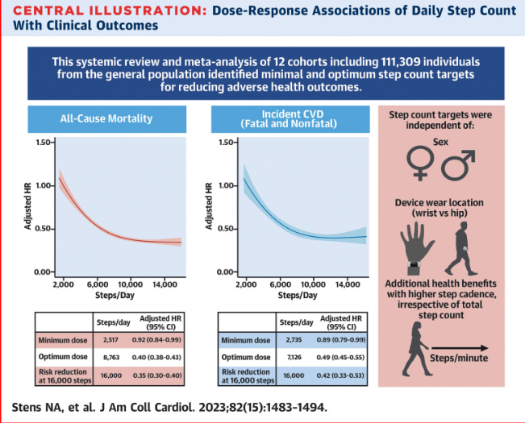
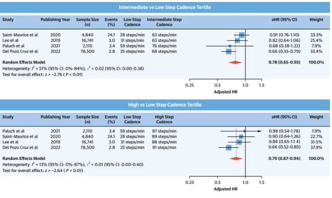
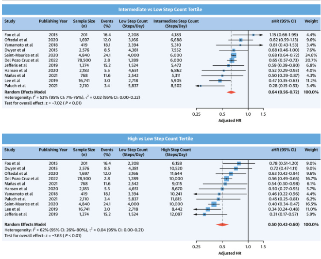

每周收到权威本草科普与养护干货
与你共同坚守本草之道

图1 (取自science)
"日行万步"，这句话你听了多少年了？
我妈从退休第一天起就开始数步数。手机里装了计步软件，吃完晚饭出门，不走够一万步不进家门。
她觉得这是在认真对待自己的身体。
我也一直以为她做得对。
直到去年，荷兰拉德堡德大学的研究团队在《美国心脏病学会杂志》发表了一项追踪了超过11万人的研究。
结论把我看愣了一下。
死亡风险差了60%，和步数关系不大。
真正拉开差距的，是另一件事。
01 走了几十年，大多数人走错了什么
一. "一万步"这个数字，从哪里来的？
图2 (取自网络 “万步计”发布时的广告照片）
先说"一万步"的来历。
这个数字最早出现在1964年东京奥运会前后。
一家日本计步器公司推出了一款产品，名字叫"万步计"——寓意每天走一万步。
没有科学研究支撑。
是营销。
这个数字就这样传了几十年，传进了中国，传进了无数人的手机计步软件，传进了医生的"健康建议"，传进了我妈的退休计划。
2023年，《美国心脏病学会杂志》那项研究终于把这件事说清楚了：
每天5000到7000步，就能获得走路对健康的绝大部分好处。

图3 (取自science）
超过7000步之后，边际效益快速递减。
从7000步走到10000步，你多付出的那3000步，健康收益几乎可以忽略不计。
你妈妈每天走的那一万步，有3000步是白走的。
不是说运动多了有害——多动当然没坏处。
只是那3000步消耗的膝盖、踝关节、腰，是真实的磨损。
二. 真正让死亡风险差出60%的，是这件事
11万人的数据里，研究者还追踪了另一个变量：步速。
结果比步数更让人意外。
与每分钟走29步（慢悠悠散步）相比：
每分钟走63步，死亡风险降低33% 每分钟走68步，死亡风险降低38%
你感受一下每分钟63步是什么速度。
不是竞走，不是跑步。
大概是"有点目的地，不紧不慢往前走"的节奏。
就是这个速度，比"每天走够一万步但走得很慢"对身体的保护力强出一大截。
原因在于，步速激活的不只是肌肉。
走得稍微快一点，心率会轻微升高，心脏要更用力泵血，血管要承受稍微多一点的压力刺激——这个刺激，是血管保持弹性、不容易硬化的训练信号。
散步太慢，心脏基本感觉不到负荷。
从保护心血管的角度，那和坐着其实差别不大。
三. 每天最少走多少步，才算数？
有人看到这里会问：那我每天就走5000步，行吗？
也是同一项研究给的答案。
与每天走2000步相比，每天走2517步，死亡风险就已经降低了8%。
每天2735步，心血管疾病风险降低11%。
这意味着什么？
一个每天只在家里走动的人——厨房、卫生间、客厅、阳台——一天下来大概就是2000到3000步。
从"几乎不动"到"稍微动了一下"，对身体已经是肉眼可见的改变。
每一步都算数。
这是悉尼大学研究团队2025年在柳叶刀子刊荟萃分析里专门说的一句话。
不是鼓励你偷懒，是告诉你：不用等凑满一万步才叫"今天锻炼了"。

图4 (取自science 步频与死亡率）
02 怎么走，比走多少更重要
一. 一个今天就能用的判断方法
怎么知道自己走得够不够快？
不用计步软件，不用心率手表。
有一个最简单的检验方法，叫"说话测试"：
走路的时候能正常说话，但说长句子会稍微喘一口气——这个状态，就是对的。
走路时能唱歌，说明太慢了。
走路时完全说不出话，说明太快了，已经进入高强度区间。
中间那个"说话稍微要换气"的状态，就是心血管收益最大的区间。
每分钟63步，大约是这个感觉。
试一下，你现在就能判断自己平时走路的速度对不对。
二. 50岁以后，走路方式需要调整
这里要专门说一件事。
50岁以后，关节磨损开始加速。
一万步的问题不只是"白走"，而是对膝关节和踝关节的累积性损伤。
有研究显示，超重或有膝关节问题的中老年人，长期强迫自己每天走一万步，反而会加速关节退化。
对这个年龄段的人，更好的策略是：
步数不用多，速度稍微上来，加上每周两次的肌肉训练。
走路保护心脏，肌肉训练保护骨骼和关节。
两件事搭配，比单纯靠步数堆出来的锻炼量，性价比高很多。
美国卫生部现行指南的建议是：每周150分钟中等强度运动（快走就算），加上每周两次力量训练。
注意，是每周150分钟——平均下来，每天22分钟。
不是每天一万步。
三. 给家里不爱运动的老人看的一件事
很多父母那辈人有一种执念：要么不动，要么就走够一万步，少于一万步觉得"没有意义"。
这是反过来的。
研究告诉我们，从"完全不动"到"每天走2500步"，是改善最大的那一跳。
之后每增加一些步数，当然也有好处，但那个"第一跳"的效益是最大的。
所以如果你家里有腿脚不太好、平时很少出门的老人——
不需要鼓励他们走一万步。
告诉他们：每天出门走20分钟，稍微走快一点点，就够了。

图5 (取自science 每日步数与临床结果之间的类别剂量）
03 结语
"日行万步"这个说法，不是坏的，只是不够准确。
它让很多人把注意力放在了数字上，而忽略了更重要的那件事——走路的质量，比走路的数量重要。
5000到7000步，走得稍微快一点，每周坚持下去。
这才是那11万人数据告诉我们的走法。
如果你身边有每天数步数、却走得很慢很悠的家人——
这篇文章，帮你把这件事说清楚了。发给他们看看。
👀 今日互动
你平时走路，是哪种状态？
A. 慢慢溜达，能边走边刷手机那种
B. 有点速度，走着走着会微微出汗
C. 一直在追"一万步"的数字，现在重新想一想
评论区告诉我们，顺手转给家里每天数步数的那个人。
参考文献： [1] Stens NA, et al. Relationship of Daily Step Counts to All-Cause Mortality and Cardiovascular Events. Journal of the American College of Cardiology, 2023. DOI: 10.1016/j.jacc.2023.07.029（荷兰拉德堡德大学，11万人追踪，平均随访78个月） [2] Del Pozo Cruz B, et al. Steps per day and all-cause mortality and cardiovascular events: a meta-analysis. The Lancet Public Health, 2025.（悉尼大学荟萃分析，每步都算数） [3] U.S. Department of Health and Human Services. Physical Activity Guidelines for Americans, 2nd edition. 2018.（每周150分钟中等强度+每周2次力量训练）
本公众号所转载或引用的文章、图片、音频、视频等内容，其版权均归原作者或原版权方所有。转载仅用于信息传播与学术交流，不代表本公众号对其观点的认同或立场。若相关内容涉及版权问题或不当使用，请权利人及时与我们联系，我们将在核实后第一时间予以更正或删除。
关于我们
热爱生命，相信未来。「 」承诺，以真材实效的珍稀本草，借助现代科技之力，让自然健康惠及人人。
✍️ 养生有疑问，问问 ！
使用指南 Q&A
💡问答入口：关注「 」公众号后，点击底部菜单栏即可进入对话界面。支持文字输入或语音提问，全天候响应。
📍特别说明： 为中医健康辅助问答工具，所提供内容仅供参考。如涉及疾病诊断或服药指导，请咨询专业医生。
📎 正在学习人参数据库，每天都更聪明一点点~
点个推荐，分享给也想用科学呵护健康的朋友们